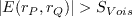
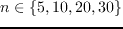

Pour déterminer les positions actives,nous exécutons proteus en mode verbeux sans effectué d'optimisation.
Il existe plusieurs façons de procéder ,ici nous utilisons le mode Monte-Carlo avec une trajectoire de zéro pas. Ces exécutions produisent en sortie standard la liste des voisins pour chaque position au seuil donnée en paramètre.
Pour chaque protéine, nous exécutons proteus avec  égal à dix , cinq et un à tour de rôle. Nous obtenons quatre listes de voisins.
Ensuite, nous cherchons dans les listes, par un script dédié, les n-uplets en interaction en partant de la liste de voisins au sens le plus fort, c'est-à-dire 10, vers la liste de voisins au sens le plus faible ().La recherche s'arrête si cinq n-uplets sont trouvés.
Nous obtenons quarante cinq n-uplets pour le groupe à cinq (respectivement dix, vingt et trente ) positions actives pour un égale à dix (respectivement dix, un et un) (voir le détails en annexe ![[*]](/usr/share/latex2html/icons/crossref.png) ). Chaque n-uplet nous créons un fichier de configuration de proteus dans lequel la balise <Space_Constraints> fixe les positions restantes au type d'acide aminé présent dans la séquence native.
). Chaque n-uplet nous créons un fichier de configuration de proteus dans lequel la balise <Space_Constraints> fixe les positions restantes au type d'acide aminé présent dans la séquence native.
mignon
2015-06-29